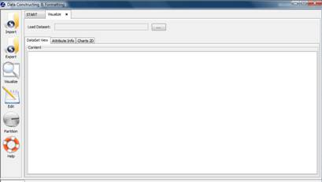
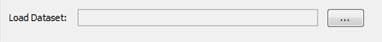
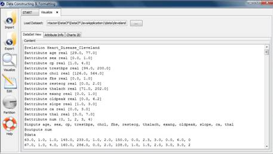
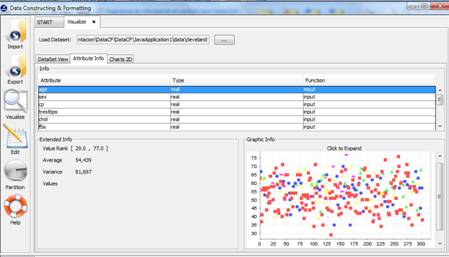
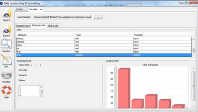
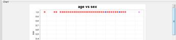
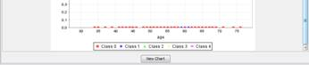
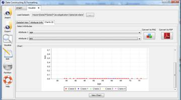

Figure 6. Select attributes to compare.
VISUALIZE DATA
Visualize option allows you to view detailed information about an existing KEEL format data set. There are different options to show the information, you can see the content of data set, specific information about the attributes and to compare by means of charts two attributes.

Figure 1. Process of Visualizing data.
Figure 1 shows the main window of this option. First of all, you must select the path of source data set (in KEEL format) that you want to visualize (see Figure 2). When the file is loaded, different information about the data set is shown according to the option selected.

Figure 2. Load Dataset to view its content.
Option 1: View Dataset. If you select to visualize this information, you can visualize the content of data set selected. The information cannot be modified, you only can visualize it (see Figure 3).

Figure 3. Visualize the content of data set.
Option 2: Attribute Info. In this option, you can obtain detailed information about the attributes defined in the data set. The information showed at the top of the windows is: attribute's type (Integer, Real or Nominal) and if the attribute is input or output. More information appears at the bottom left side of the window. The information showed depends on the attribute type, in the case of integer or real attribute the values of rank, average and variance are shown. In the case of Nominal attribute, you only view its possible values. Finally, on the bottom right side of the window, a chart with the distribution of the attribute’s values is shown too. Figure 4 show the information of an attribute real and Figure 5 shows the information of a nominal attribute.

Figure 4. General and graphic information about real attribute.

Figure 5. General and graphic information about nominal attribute.
Option 3: Charts 2D. In this option, you can compare different attributes. First, you have to select the two attributes that you want to compare, for each attribute you have available a list with all attribute of data set (see Figure 6) .

Figure 6. Select attributes to compare.
Once the attributes are selected, you have to click the “View chart” button and a graphic is shown. If you need to include the generated chart in other document, you can use the buttons: “Convert to PNG”: this option saves the graph as a PNG image and “Conver to PDF”: this option saves the chart as a PDF document.


Figure 7. Chart to compare the two attribute selected

Figure 8. Visualize Charts 2D